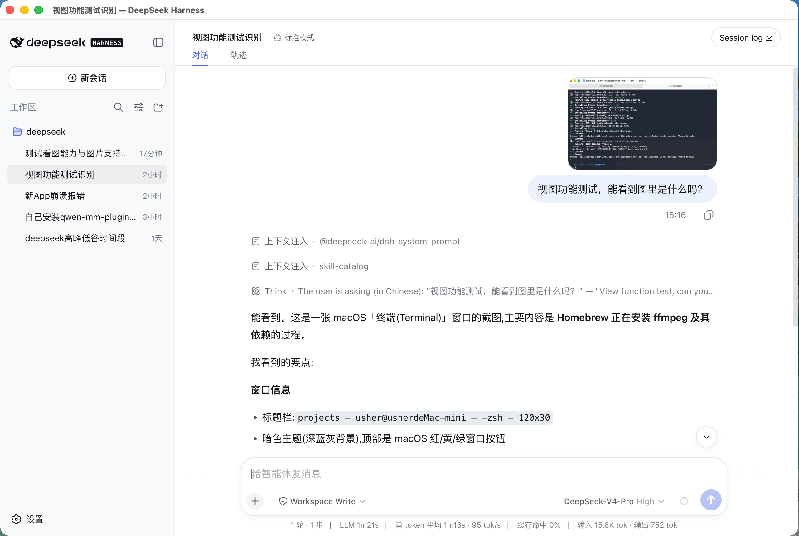
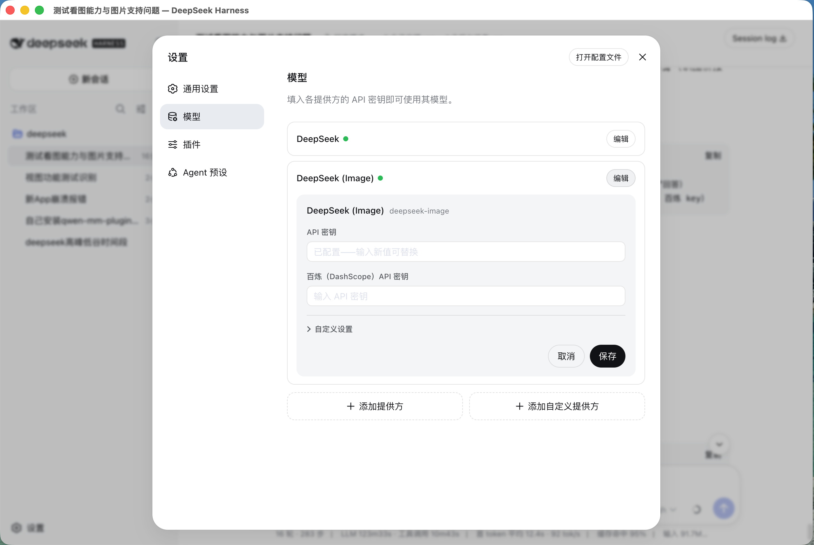

DeepSeek Desktop 是一个开源桌面客户端：不用敲命令，在网页界面里填 API key 就能用；把图片粘进对话框，它就能看懂。
An open-source DeepSeek desktop client — configure in the web UI, no terminal needed, with seamless image understanding.
不用装 Node、不用敲命令、不用配环境变量。打开 App，在「设置 → 模型」里填 key 就能用。
粘贴或拖入图片，App 自动调用视觉模型把图看懂，再让 DeepSeek 回答你。截图、照片、含文字的图都行。


所有安装包在 Releases：
DeepSeek Desktop-*-mac-arm64.dmgDeepSeek Desktop-*-mac-x64.dmgDeepSeek Desktop-*-win-x64-setup.exe / -portable.exemacOS 提示「无法验证开发者」时：右键 App → 打开；或 xattr -dr com.apple.quarantine "/Applications/DeepSeek Desktop.app"。
DeepSeek 是纯文本模型，不会看图。App 用百炼视觉模型（qwen3.7-plus）先把图转成文字，再交给 DeepSeek。
不用。只填 DeepSeek key 即可。
不是。第三方开源客户端，只调用你自己的 API key，基于开源 DeepSeek Harness 构建。
软件免费开源；你只需付自己 API key 的调用费。